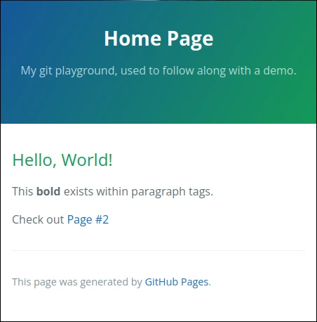
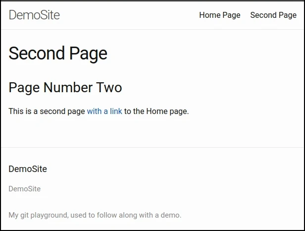

Website with Jekyll¶
There are many Static Site Generators (SSGs) out there.
GitHub has some “magic” integration with Jekyll, making this the easiest
path forward.
Convert Site¶
Jekyll requires that a _config.yml file exist within the git repository.
This YAML file will require two values:
title: Our example usedDemoSite, so we will keep this valuetheme: GitHub provides a limited set of themes that require no extra effort to use
Using these values, create _config.yml similar to the following:
title: DemoSite
theme: jekyll-theme-cayman
Rename index.html to index.md and update it with the following content:
---
title: Home Page
---
Hello, World!
-------------
This **bold** exists within paragraph tags.
Check out [Page #2](/second)
Similarly, rename second.html to second.md and update it with:
---
title: Second Page
---
Page Number Two
----------------
This is a second page [with a link](/) to the Home page.
Finally, review these changes in GitHub Desktop, create a quality commit
message, and push the changes to GitHub
After a short period of time, GitHub will build the new version of your website. You will now be able to observe that Jekyll combined our Markdown documents with a “theme” and generated two HTML pages.
Change Theme¶
The minima theme is built into jekyll, and so it naturally provides access
to the most features. Changing to this new theme is as easy as updating the
single line in our configuration file to say theme: minima.
After a quality commit, push, and coffee break …
Surprise! This theme even comes with a navigational menu. :)
Markdown Content¶
Using markdown means we have many advanced formatting features available that do not require us to know any HTML.
Add markdown.md to your git repository with the content:
---
title: Markdown
---
# Example heading
This is an example of markdown features.
## Subheading
Unordered List:
- item 1
- item 2
- item 3
Ordered List:
1. item 1
2. item 2
3. item 3
Yay lists!
> This is a blockquote
Or perhaps a code block?
```html
<html>
<head><title>DemoSite</title></head>
<body>Hello World!</body>
</html>
```
Create another quality commit message and send this out to be built! After some time, you should have page with many interesting examples on your website.
Chapter Recap¶
Jekyll is a Static Site Generator that has native integration with GitHub, making it a great option for very simple websites.
This hands-on chapter converted our hand-written HTML into Markdown that Jekyll can built into HTML for us, after assembling a more complete website using our theme of choice.